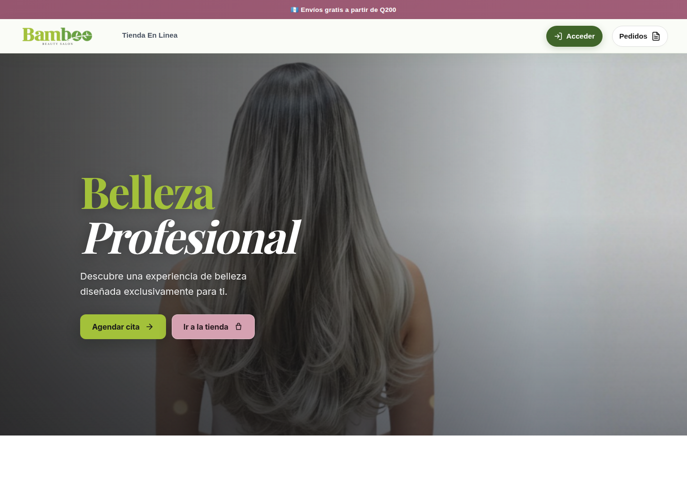
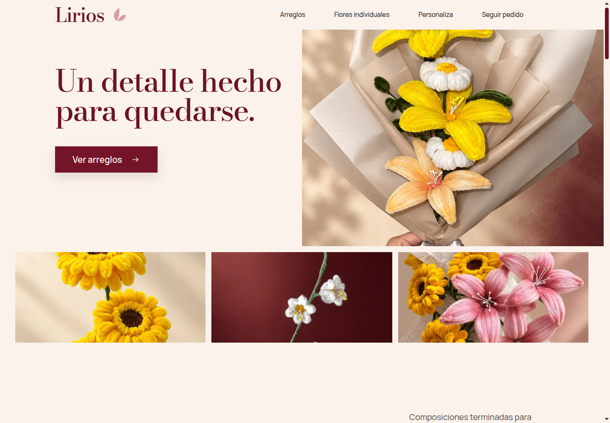

Tu proyecto web, de principio a fin.
Páginas web, tiendas en línea y sistemas a medida.
Un único responsable, trato directo.
Trabajo seleccionado
Ideas que toman forma.
Lirios
En desarrolloSoluciones web
para tu negocio.
- Páginas web
- Tiendas en línea
- Sistemas a medida